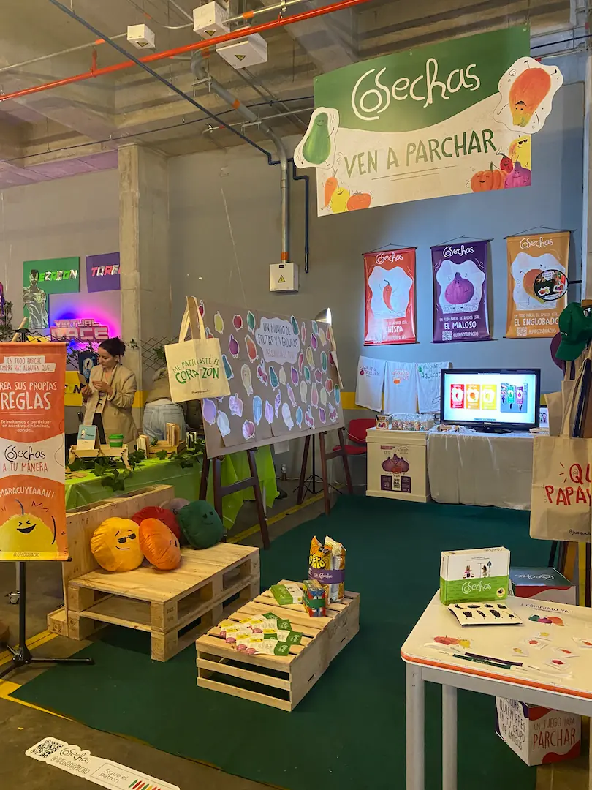

Our proposal focused on developing a comprehensive communication strategy for the game "Cosechas", expanding its reach beyond social media and connecting with users at various points of contact. This Colombian card game, created by Dipacho, already has an established graphic identity. Based on this, we have designed a promotional graphic that complements the essence of the game, using the concept of the roles and qualities of people within their group of friends, represented through the metaphor of fruits and vegetables, a key element in its visual identity.
Juegatón
Design team:
Lyda Martinez
Paula Hurtado
Manuela Calle
The entire promotional strategy was presented at the "Juegatón", an event held in May 2024 at the Jorge Tadeo Lozano University in Colombia. During the event, some of the pieces created were implemented and dynamics were carried out with the attending public to publicize "Cosechas". This staging not only allowed the game to be brought closer to new users, but also to evaluate the effectiveness of the strategies that had been designed.

